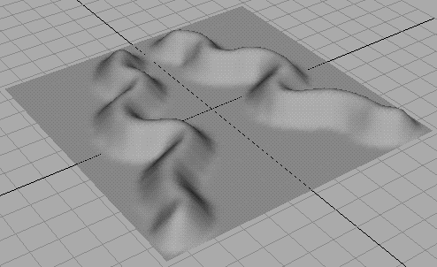
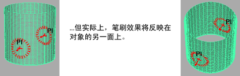

可以设置 Artisan 工具，以便在绘制时沿选定的轴镜像或反射笔刷笔划。如果要创建对称效果，该方法非常有用。有关详细信息，请参见 Artisan 工具设置中的笔划(Stroke)部分。

注： 在曲面上反射绘制时，反射可能看起来好像不对称...

反射是通过基于选区边界框中心的 X、Y 和 Z 轴或通过原点进行的，具体取决于所选的设置。
反射笔刷笔划
- 选择要进行绘制的曲面。
- 选择要使用的 Artisan 工具，并打开“工具设置”(Tool Settings)编辑器。
- 打开“笔划”(Stroke)部分，然后选择“反射”(Reflection)。如果要通过原点而不是选定对象的边界框中心反射笔划，请选择“基于原点镜像”(Reflection About Origin)。
- 选择“反射轴”(Reflection axis)：X、Y 或 Z。
提示： 现在，如果将笔刷轮廓移到曲面上，则可预览其他笔划将在对象的哪个位置出现。这有助于您查看是否已选择正确的轴。
- 绘制曲面。绘制的笔划将沿选定的轴进行反射。